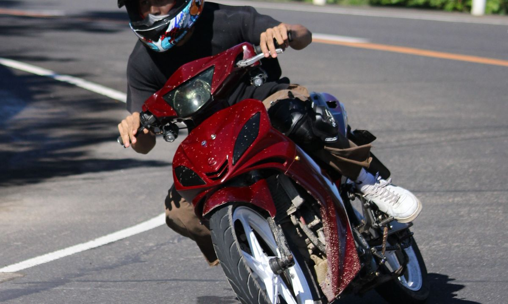

С 1 января 2025 года во Вьетнаме действует Указ 168/2024 — штрафы за нарушения ПДД резко подняли, а полиция стала строже, в том числе с камерами. Для туриста на байке это важно знать, чтобы не отдать половину отпускного бюджета за ерунду. Разбираем по-простому: что и сколько в 2026-м.
На байк 50 кубов права не нужны — это легально. Вместе с Указом 168 ввели систему баллов на водительские права (за нарушение списывают баллы, набрал лимит — права аннулируют). Но у вас на 50сс прав нет — значит списывать нечего, система баллов вас не касается. А вот денежный штраф вы платите в любом случае. Поэтому смотрим на суммы.
Суммы указаны по Указу 168/2024; со временем могут обновляться, но порядок такой.
По статистике и рейдам — это шлем (топ-1, застёгивайте ремешок!), документы на байк (их надо возить с собой) и красный свет / встречка. Полиция в Нячанге периодически устраивает проверки на ключевых улицах и набережной.
Мы продаём байки с чистыми документами, проверенными по базе полиции — поэтому штрафа «нет документов» или «не тот байк» у вас не будет. Плюс это реальные 50сс — легально без прав. Остаётся только надеть шлем и ехать спокойно.
Подробнее про то, нужны ли права на 50сс, и какие байки бывают. Готовы подобрать — смотрите каталог.